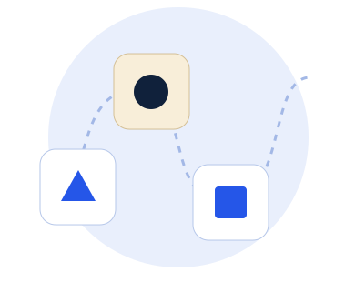

English
Comprehension and vocabulary
Develop inference, accurate responses and writing where these are assessed.
11+ and entrance exams
Focused online preparation in English, Maths and reasoning, shaped around the requirements of your target school or exam.

What we can work on
English
Develop inference, accurate responses and writing where these are assessed.
Maths and reasoning
Strengthen arithmetic and problem solving, then practise the reasoning formats required.
Where required
Practise thoughtful answers and explaining ideas clearly, without learning a script.
Illustrative worked example
Look at the change between numbers before choosing an answer.
The next number is 48 using the rule “double the previous number”. This illustrates number reasoning; actual test formats vary.
The teaching approach
Use the school or test requirements to identify what needs to be prepared.
Work on the English, Maths or reasoning skills that underpin successful answers.
Practise relevant question types and discuss the choices behind each answer.
Move towards timed, format-specific practice as the underlying skills become secure.
Preparation should follow current official admissions guidance. Test formats can differ by school, area and consortium.
Before you enquire
Fees vary depending on the tutor’s experience. Ask for the current fee before arranging lessons. Payment is due after each lesson. See our FAQ for the 24-hour cancellation policy.
No. Subjects, format and selection stages can vary by school and area. Current official admissions information should determine the preparation plan.
Timed practice is more useful once the underlying skills are reasonably secure. Starting too early can repeat the same gaps without addressing them.
No. Tuition can support preparation, understanding and familiarity with the test, but cannot guarantee an admissions outcome.
Include your child’s year group, target school or area, test date if known, and the main area of support.